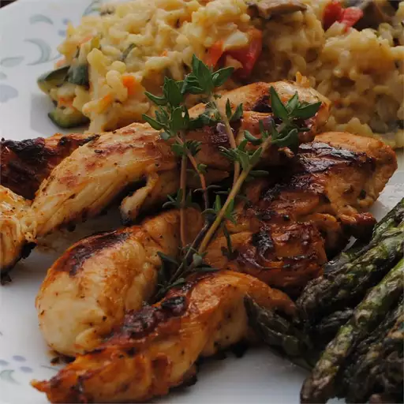

Lemon Thyme Chicken Tenders

Description
Little pieces of chicken with lemon and thyme thrown in for good measure.
Ingredients
- 2 tablespoons olive oil
- 1 clove garlic, minced
- 6 sprigs fresh thyme, leaves stripped and chopped
- 1 tablespoon lemon zest
- 1/4 cup lemon juice
- salt and pepper to taste
- 1 pound chicken breast tenders
- olive oil-flavored cooking spray
Steps
- Combine the olive oil, garlic, chopped thyme, lemon zest, and lemon juice in a large mixing bowl. Season the chicken tenders with salt and pepper. Toss chicken with the olive oil mixture; allow to marinate for 5 minutes.
- Spray a non-stick skillet with cooking spray, and place over medium-high heat. Cook chicken tenders in the hot pan until lightly browned and cooked through, about 4 minutes per side.